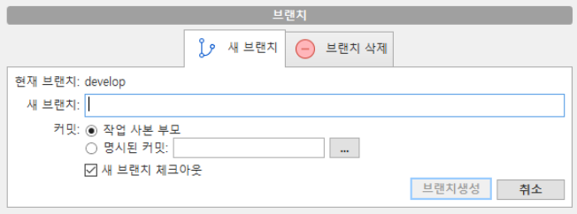

git GUI 사용하기
git gui : 프로젝트 히스토리를 시각화하여 도와주는 도구
sourceTree url 에서 다운로드 할 수 있습니다.
★ (커밋,pull,push,패치,브랜티,병합) 만 사용하시면 됩니다.

[0] 패치 하기

[1] 기존에 pc에 저장된 코드를 불러오는 방법
- +버튼을 클릭하고 저장된 위치를 설정하고 추가합니다.
[2] 새로 git 코드를 clone 받기
Git 소스코드 Clone할떄는 SSH보다 HTTPS로 진행하시면 더 쉽게 셋팅하실 수 있습니다. 아래 블로그 내용을 따라하시면 쉽게 설치 가능합니다. https://gocoder.tistory.com/739
[3]origin의 브런치 develop로 로컬에서 체크아웃 하는 방법
 1.원격에서 origin에서 develop를 클릭 > 마우스 오른쪽 '체크아웃 origin/develop'를 클릭 >브랜치에 develop가 생성됩니다.
1.원격에서 origin에서 develop를 클릭 > 마우스 오른쪽 '체크아웃 origin/develop'를 클릭 >브랜치에 develop가 생성됩니다.
[4]로컬 develop 브런치에서 새 브런치 만들기
develop클릭하고 상단에 '브랜치'를 클릭하고 브런치 생성합니다. 
[5] 생성된 브런치에서 커밋하는 방법
1.스테이지에 올라가지 않은 파일을 스테이지에 올려줍니다. 2.메세지 입력 후 커밋 버튼 클릭
[6] 커밋 이후 푸시하기
ex) 작업 완료한 브런치'38' 를 클릭한 상태에서 push 버튼을 클릭